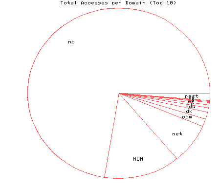
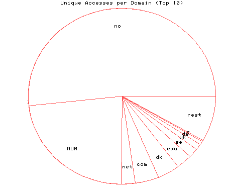

HTTP Server Domain Statistics
Covers: 10/11/95 to 11/07/95 (27 days).
All dates are in local time.
1 level, sorted by number of requests, 54 unique domains.
270631 : 7634 : 11/07/95 : Norway (.no) 50580 : 3410 : 11/07/95 : (numerical domains) 28417 : 350 : 11/07/95 : Network (.net) 5441 : 602 : 11/07/95 : US Commercial (.com) 5073 : 572 : 11/07/95 : Denmark (.dk) 3101 : 404 : 11/07/95 : US Educational (.edu) 2003 : 242 : 11/07/95 : Sweden (.se) 1624 : 168 : 11/07/95 : United Kingdom (.uk) 800 : 92 : 11/07/95 : Germany (.de) 694 : 33 : 11/06/95 : Iceland (.is) 581 : 66 : 11/07/95 : Netherlands (.nl) 533 : 35 : 11/07/95 : Switzerland (.ch) 503 : 73 : 11/07/95 : Canada (.ca) 494 : 49 : 11/07/95 : France (.fr) 448 : 60 : 11/07/95 : Finland (.fi) 282 : 26 : 11/07/95 : Italy (.it) 201 : 28 : 11/06/95 : Japan (.jp) 125 : 22 : 11/06/95 : Singapore (.sg) 111 : 12 : 11/04/95 : United States (.us) 100 : 21 : 11/07/95 : Non-Profit (.org) 99 : 13 : 11/02/95 : Belgium (.be) 98 : 13 : 11/03/95 : Austria (.at) 80 : 18 : 11/06/95 : Australia (.au) 74 : 13 : 11/06/95 : US Military (.mil) 71 : 7 : 11/05/95 : Israel (.il) 63 : 3 : 11/07/95 : Thailand (.th) 60 : 8 : 11/06/95 : Old style Arpanet (.arpa) 51 : 11 : 11/06/95 : Poland (.pl) 51 : 13 : 11/05/95 : US Government (.gov) 43 : 2 : 11/05/95 : Portugal (.pt) 37 : 6 : 11/06/95 : Greenland (.gl) 26 : 3 : 11/06/95 : International (.int) 26 : 5 : 10/27/95 : Spain (.es) 25 : 3 : 10/22/95 : Ireland (.ie) 25 : 5 : 10/15/95 : Brazil (.br) 23 : 5 : 11/07/95 : Hong Kong (.hk) 22 : 6 : 11/06/95 : Hungary (.hu) 20 : 6 : 11/06/95 : Czech Republic (.cz) 20 : 5 : 11/03/95 : Estonia (.ee) 16 : 4 : 11/06/95 : Indonesia (.id) 12 : 3 : 11/02/95 : Mexico (.mx) 11 : 3 : 10/28/95 : Taiwan (.tw) 8 : 2 : 11/07/95 : Faroe Islands (.fo) 7 : 1 : 10/18/95 : Malaysia (.my) 6 : 2 : 11/06/95 : South Africa (.za) 6 : 1 : 10/29/95 : Nicaragua (.ni) 6 : 2 : 10/23/95 : United Arab Emirates (.ae) 5 : 3 : 10/23/95 : New Zealand (.nz) 4 : 1 : 10/20/95 : South Korea (.kr) 3 : 603 : 10/13/95 : Colombia (.co) 2 : 1 : 11/01/95 : Slovak Republic (.sk) 2 : 1 : 10/29/95 : Malta (.mt) 2 : 1 : 10/26/95 : Luxembourg (.lu) 1 : 9 : 11/01/95 : Argentina (.ar)

Statistics generated at Wed Nov 8 10:29:07 MET 1995, (C) Oslonett AS, 1995.